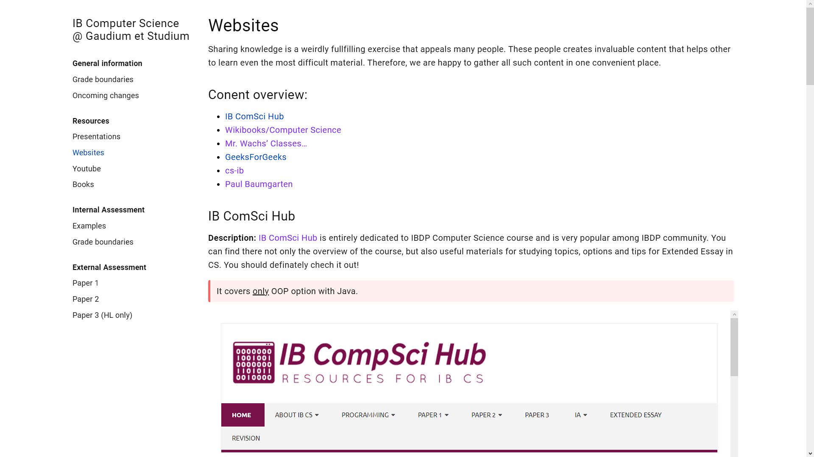
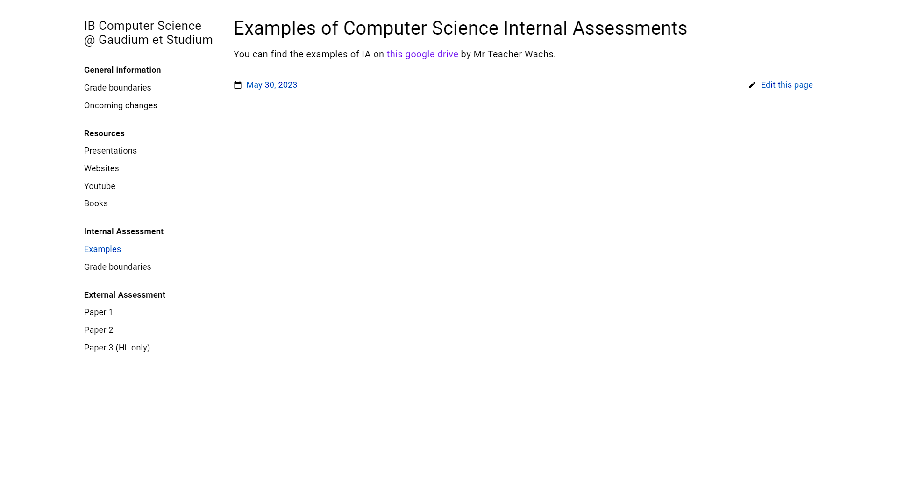
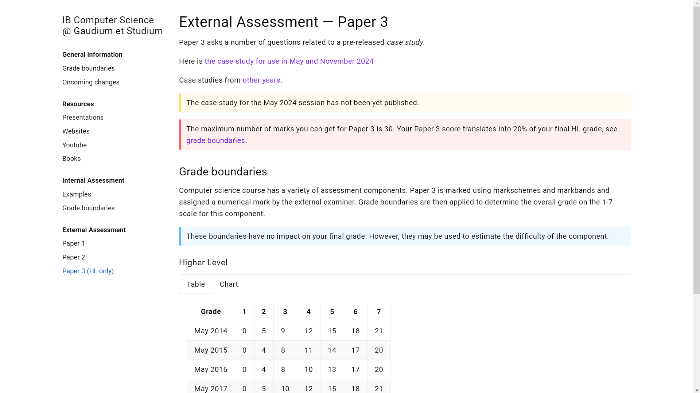

Either way, I’m glad you’re here because there’s a lot to write about. So have a comfortable sit and let’s get started!
I used my school’s website because: A) I can B) It is finally useful
Anyway, it is all I can say about the Websites resource. If you want to see more, go to the Center.
Admittedly, what’s now there, may change in the future. Of course, the change won’t not drastic. I’m rather talking about appending new website I’ll discover or that will be sent to me - as was the case for cs-ib where it was my Computer Science teacher who showed my this beauty because he used it to teach the Web Science option.
(cs-ib is also a very interesting option for those seeking a way to start with open source . Although it runs on a different website generator than my blog, I find it a worth-considering option).

Here you can see how the Websites resource looks like.
Presentations#
The Presentations resource is something I came up with on the fly. I was scrolling through Reddit when I came across this post on the IBO subreddit. A guy just shared a presentation about a random IBDP Computer Science course topic - tests types - (actually, she/he made several posts for different subjects ) and it occurred to me that presentation is where a lot of people learn from. The power of this realization was strengthened, when I saw his/her other posts - this time about data loss - and after I DMed him - unfortunately I haven’t received any meaningful response yet 😥.
I was also motivated by presentations I had from my Computer Science classes. After all, we did nothing, but presentations throughout the year, covering two whole options - Databases and Simulation and Modelling.
Therefore, even though I’m not a huge fun of this particular learning approach, I decided to extend resources with the Presentation resource, for the sake of others. Maybe someone will find it useful.
But here’s the thing - this resource is rather poor, currently. I was able to include only one option (Simulation and Modelling) because I didn’t create the presentations about Databases and couldn’t share them with “everyone with the link.” I will talk with my Computer Science teacher and the issue should be resolved.
Nevertheless, it changes nothing because, even if the teaches grants me access to these presentations, I’ll have only two options and two random subtopics for Paper 1. Indeed, it is not much, not to mention that this resource is visually unappealing (as is the whole website, but this one thing looks particularly ugly and boring).
Overall, I’m sure that this resource will be improved one way or another over time. Now, it’s waiting for feedback and more presentations.

As I said, the Examples subsection is extremely simple, but it’s all one may need.
Minor improvements#
Internal Assessment#
First and foremost, I added a new thing under the Internal Assessments section. This one is not very elaborate, but sufficient - it has a link to a Google Drive with real and graded Computer Science Internal Assessments. This Drive has been created by a Canadian high school teacher - Mr. Wachs. I recommend visiting his website as you can find a lot of good stuff there to learn Computer Science, even in IBDP.
Anyway, to view the IAs, you may need to request access. However, everyone who asks receives it so don’t worry.
Besides, I deleted the Important dates subsection as it’s unnecessary regarding the purpose of the website. Each school distributes deadlines differently over the year, so putting the ones imposed by my school makes no sense.
Git issues#
<— TECHNICAL PART —>
Updating the Resource Center requires a little bit more work than updating my blog. It is because, in case of my blog, I am the owner of the repository where my website is hosted. This means that I can do whatever pleases me the most, but more importantly that I need to execute the following three git commands to update my blog:
>>> git add .
>>> git commit -m "{Some description}"
>>> git push
and that’s all.
However, since the repository where the Center is hosted was created by someone else (which means operating on a forked repository, not the original one), I don’t have such privileges and I need to go through more steps.
After executing the aforementioned commands, I open a so-called pull request . Basically, this way, I merge changes I made in the forked repository to the original one. Then, I go to the original repository to accept the pull request, go back to my forked version and pull what’s been changed by the website generator in the original repository. All that’s left is this command:
>>> git pull
and voila! Newly added content is available to everyone!
<— END OF TECHNICAL PART —>
But why am I explaining all this?
Well, the reason is simple - I wanted to complain. While making sure that the theme I use in the Center is up-to-date, I tried to marge updated theme. It turned out that there were some conflicts (code that contradicts itself in a way) and I couldn’t do so. After researching, I found an issue, but man… never again. But it’s just the way it is with programming and I can’t do anything about it.
The important thing is, it worked and you can enjoy the newest theme version!
Case study#
The beloved case study by Computer Science HL students! Demanding only 30-ish% to score the highest mark, case study proved to be an excellent opportunity for students to explore cutting-edge technologies!
Jokes aside, case study is hard because you have no idea what to expect. That’s why they are getting rid of it (read more here ).
Nonetheless, November and May 2024 students will still have Paper 3 (based on a case study) as a part of their external assessment. This is the reason I added a link to the PDF with the most recent case study as well as links to previous case studies.
I wish you very best time reading them!
What to add?#
In contrast to the previous blog post, I do not have anything specific in mind as to how should I extend the Center. I believe I included all major resources from which people would like to learn.
Of course, I will be adding more and more content to each resource as we go, but that’s not anything special. It’s just constant improvement, another iteration as a coder would say.
However, as I have already stressed, IB plans to release a new syllabus. When it happens, there will be for sure a huge update of the whole website to fit the best the needs of a new curriculum. Moreover, I’ll probably be joining the IBelieve Writing Team. Citing their own web page:
IBlieve is an open, positive community for prospective and current students who want to succeed in the International Baccalaureate Diploma Program (IBDP).
If they accept me and IB finally publishes new syllabus, I will make a break down of the whole curriculum which I’ll reference in the Resource Center.

At the top is the link to the newest case study along with reference to past case studies.
End#
As always, I spent way too much time writing this reflection and pointlessly attached some Computer Science stuff. But hey! It’s my blog and nothing stops me. I’ll probably have less readers and those who would make it to the end would be tired as hell, but it makes this place unique, doesn’t it?
Going back to the point, I am super excited to manage this project. It’s extremely fulfilling and gives me a sense of purpose. Furthermore, I love sharing knowledge and the Resource Center is a great place to do so.
I hope that I will be able to say the same thing being part of IBelieve team. We’ll see about that in the future.
Now, have a good summer break and see you next school year!
Learning outcomes:#
LO 1 Strength and Growth
LO 2 Challenge and Skills
LO 3 Initiative and Planning
LO 4 Commitment and Perseverance
LO 5 Collaborative Skills
LO 6 Global Engagement
LO 7 Ethics of Choices and Actions